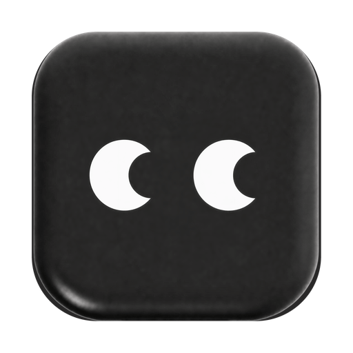

修复 workspace 切换卡死
本地会话
正在加载对话窗口…
正在加载本地 transcript 和会话状态。
 DeepSeek
DeepSeek
08 · Named restore
浮动卡片报「正在恢复哪一个会话」。logo 做身份，会话名做锚。Native 带 engine 小标；Shared 带百分数。适合从侧栏点进一条有标题的历史。

DeepSeek
会话名来自侧栏已有标题，不要另造。无标题时退回 01。风险：卡片像 modal，会让人以为要点确认；落地时禁止可点遮罩。